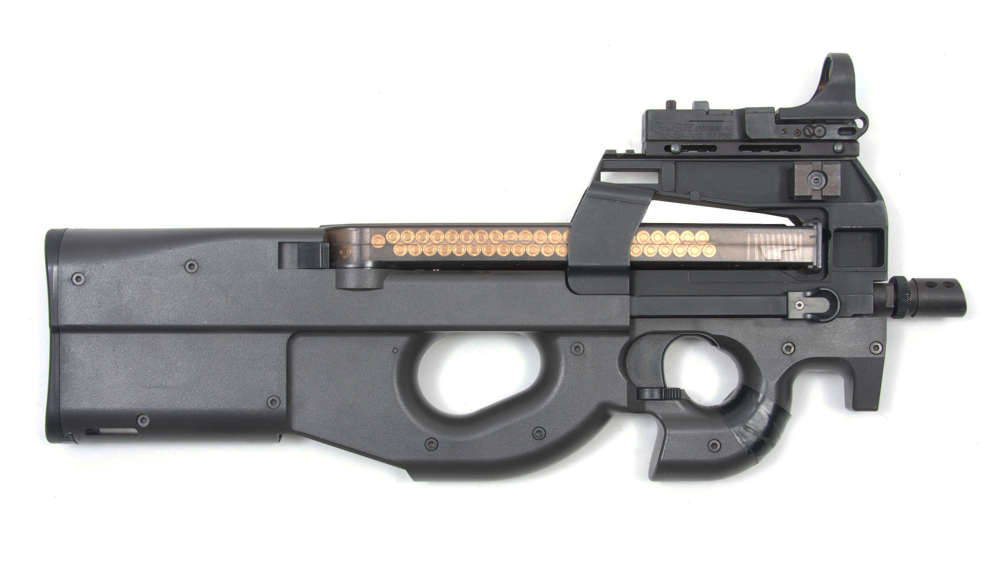

P 90
The FN P90 is a selective fire personal defense weapon (PDW) designed and manufactured by FN Herstal in Belgium.[9] The P90's name is taken from 1990, the year it was introduced.[4] The P90 was created in response to NATO requests for a replacement for 9×19mm Parabellum firearms; it was designed as a compact but powerful firearm for vehicle crews, operators of crew-served weapons, support personnel, special forces and counter-terrorist groups.
- Range: 200 metres
- 10.4" barrell
- Capacity: 50 rounds